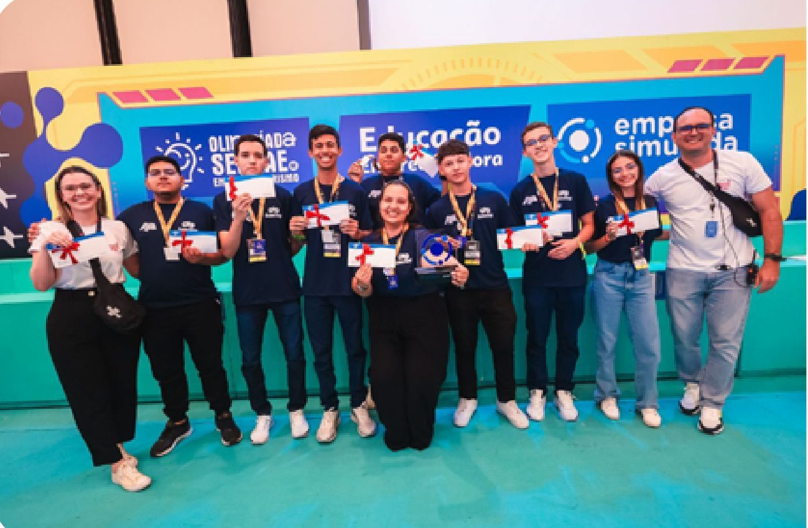
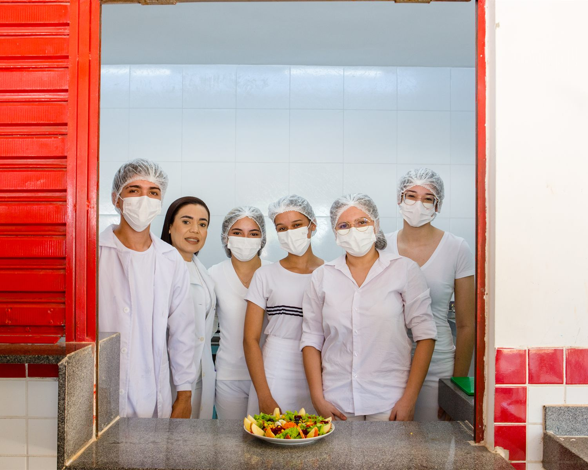
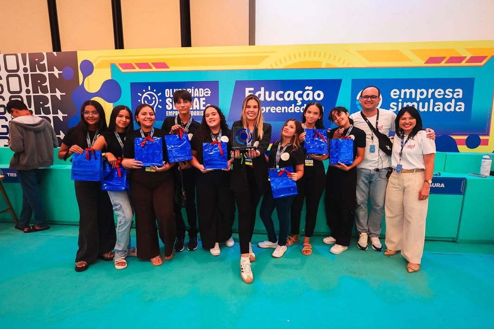
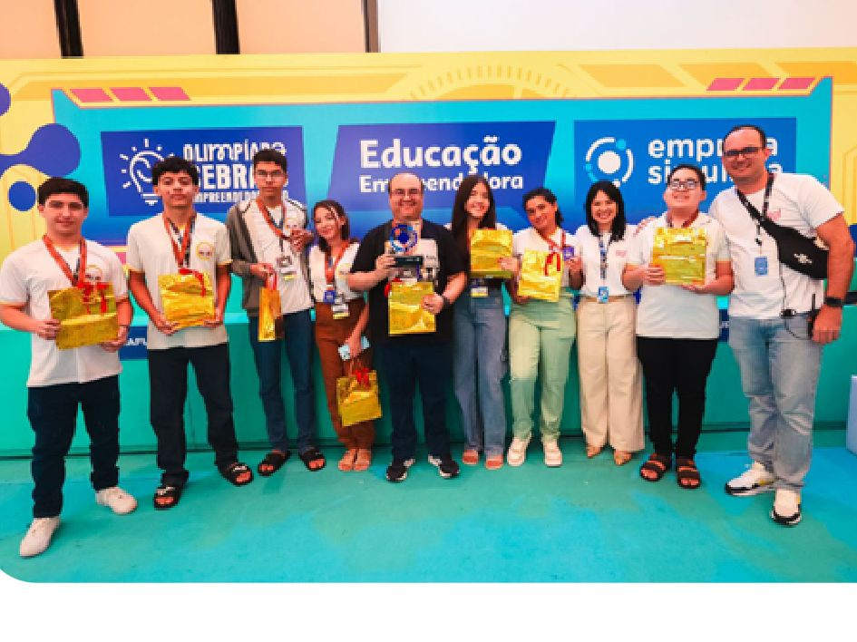
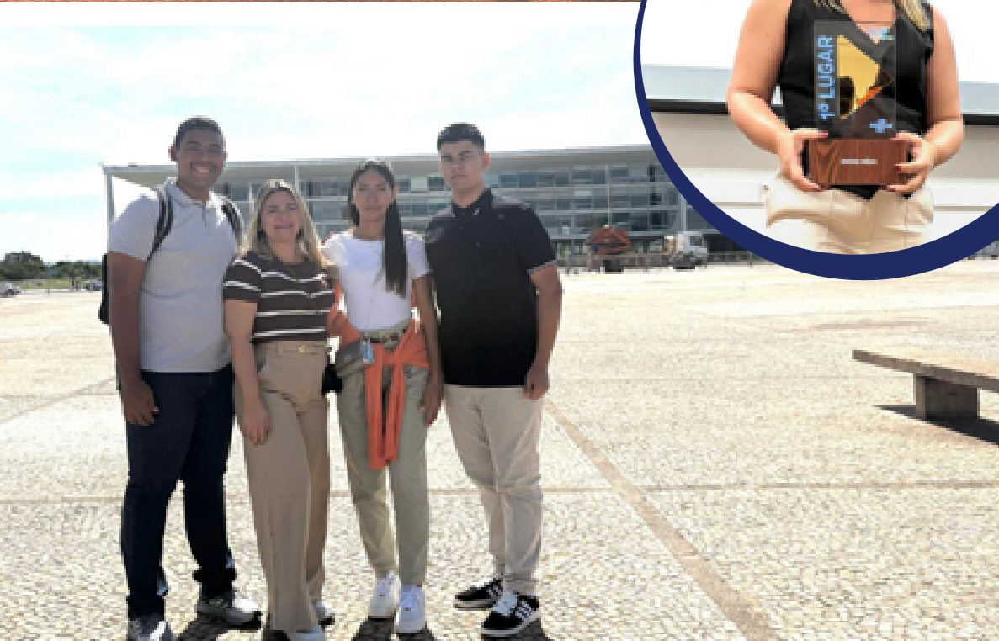
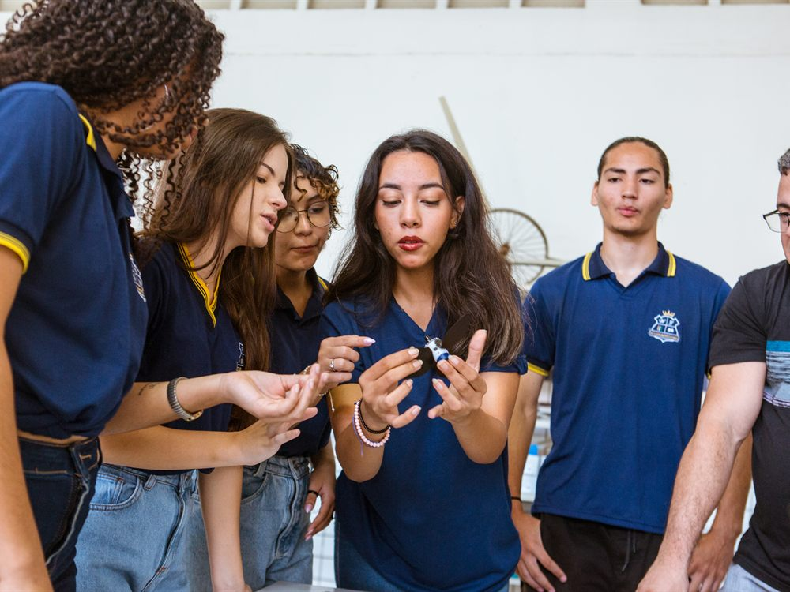
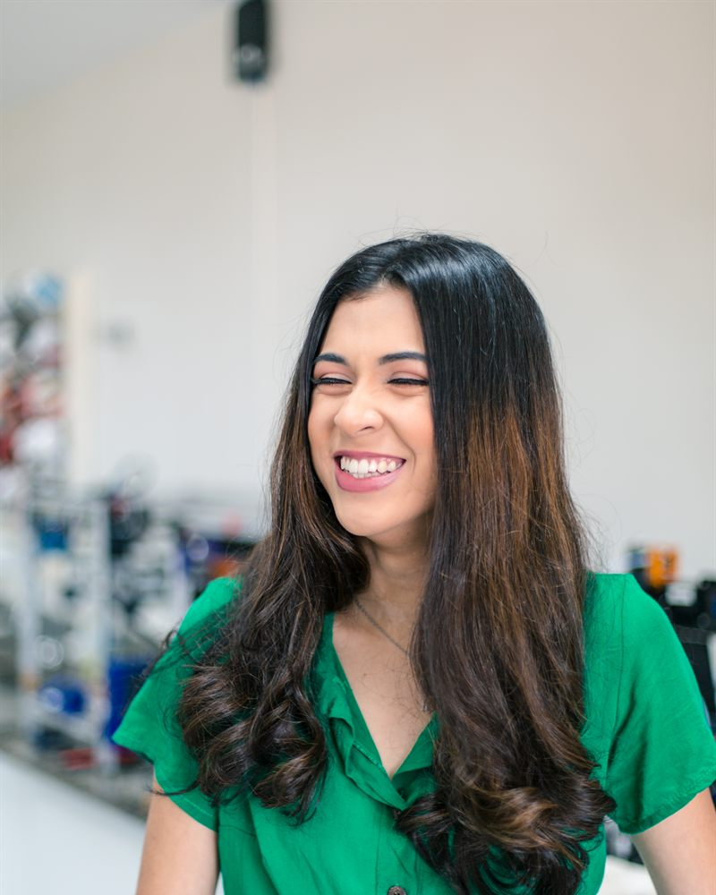

1º lugar
Game Shop
Professora orientadora: Amanda Cristina Dantas
EETI Professor Francisco Veras, AngicosRelatos e experiências das escolas, CEEPs e IERNs: projetos que nasceram em sala de aula e foram premiados, programas que abriram portas para o trabalho e as vozes de quem vive a EPT.

Na olimpíada, estudantes criam empresas simuladas, apresentam suas ideias e aprendem a transformar um projeto em negócio. A rede estadual mobilizou:

Professora orientadora: Amanda Cristina Dantas
EETI Professor Francisco Veras, Angicos
Professora orientadora: Williany Marillac da Nóbrega
EE Senador José Bernardo, São João do Sabugi
Professor orientador: Antônio Junior Batista
EE Valdemiro Pedro Viana, ApodiA Escola Estadual Severiano Melo inscreveu três projetos no Desafio Liga Jovem, do Sebrae. Um deles, o NatureGuard Bov, pesquisa as propriedades da babosa, da própolis e do cravo-da-índia. Foi finalista estadual logo na primeira participação da escola.
O grupo venceu a etapa estadual na categoria Ensino Profissional e foi a Brasília representar o RN no III Inovept, o Encontro Nacional de Inovação e Empreendedorismo na EPT, em 2025. A professora Mayara Medeiros também ficou em 1º lugar no concurso de vídeos “Lições que Inspiram”, do Sebrae.
“Se você viver o processo com intensidade, com amor, com dedicação, certamente os frutos serão colhidos.”Prof.ª Mayara Medeiros, Escola Estadual Severiano Melo

Desde o segundo semestre de 2024, o programa leva a aprendizagem profissional às escolas, com contratos de trabalho regidos pela CLT: experiência real, com direitos garantidos.
Para ampliar o programa, a SUEP articula empresas, o Ministério do Trabalho e Emprego, agentes de integração e outros setores do governo estadual.
Como funciona a aprendizagemEm todos os cursos, o projeto integrador é o espaço onde a formação geral e a técnica se encontram: os estudantes investigam problemas reais e propõem soluções.
Na Escola Estadual Walfredo Gurgel, em Natal, os cursos de Eletrotécnica e de Sistemas de Energia Renovável contam com parcerias com a UFRN, o Sebrae, o Sesi, a Cosern/Neoenergia e a UBS do bairro. Dali saíram um laboratório móvel de subestação elétrica, criado pelos professores para ensinar alta tensão com segurança, e uma sala maker. O primeiro produto da sala, um jogo matemático com peças impressas em 3D, foi aceito num simpósio nacional em Brasília e agora está sendo adaptado para pessoas com deficiência visual.
A integração aparece no detalhe: a trigonometria encontra a inclinação dos painéis solares, e a disciplina FizMat liga Física e Matemática aos cursos técnicos. Todo ano, o simpósio da escola, o Sivague, apresenta os projetos dos estudantes.
“A gente não traz nada pronto. A gente sempre procura se sentar com eles, ouvir, fazer brainstorm, para saber o que eles realmente gostariam de pesquisar. Não é só aprender para fixar, é aprender para dentro.”Prof. Glauco George Cipriano Maniçoba, Escola Estadual Walfredo Gurgel



Primeiro centro de educação profissional do estado, criado em 2002 em Natal, o CENEP Senador Jessé Pinto Freire construiu sua identidade em torno da prática profissional. A coordenação de estágio apresenta o centro às empresas, prepara os estudantes desde o primeiro dia e acompanha cada contratação.
“Somos o elo entre a escola e o mundo do trabalho. Não adianta esperar o mercado vir até você. A gente se apresenta, diz quem somos, quais são nossos estudantes e suas potencialidades.”Fátima Coelho, coordenadora de estágio do CENEP desde 2012Tudo sobre estágio e trabalho


A pesquisa, os projetos integradores e o TCC fazem com que os egressos cheguem à universidade e ao trabalho sabendo formular perguntas, analisar dados, trabalhar em equipe e comunicar resultados.

“Fui da primeira turma do curso técnico da escola, e isso me levou a descobrir o universo das energias renováveis. Chegar à universidade sem esse contato seria assustador: o curso me preparou para buscar as oportunidades.”Lívia Moura Técnica em Sistemas de Energias Renováveis pela EE Walfredo Gurgel. Hoje cursa Engenharia Mecatrônica na UFRN.

“Eu não sei quem eu seria se não fosse o CENEP. No início, eu achava que não tinha potencial, mas tinha uma rede de apoio me dizendo: ‘Você vai tentar, você vai passar’. Foi isso que me levou a passar em primeiro lugar em Jornalismo na UFRN.”Lorrayne Tarquino dos Santos Técnica em Informática pelo CENEP. Hoje cursa Jornalismo na UFRN e é bolsista da TV Universitária.


Fotos de agosto de 2023, feitas pela SUEP nas escolas, universidades e empresas. Depoimentos da revista “Rede Estadual de EPT: História, Saberes e Transformação”.
“O curso técnico impacta diretamente na sua vida — mas você tem de saber usar o que tem em mãos. Hoje, estou estudando e trabalhando na área.”
“Quando a gente vê essa questão das plenárias, a gente vê uma coisa diferente: a escuta da comunidade, a escuta do mercado de trabalho. Para a comunidade, foi uma coisa nova: a escolha do curso.”
“A eletiva de Desenvolvimento de Jogos foi o que me levou para onde estou hoje. Me descobri como uma pessoa muito criativa e consegui explorar essa criatividade dentro da informática. O CEEP me preparou para o que eu ia encarar.”
“No TCC, a gente construiu um coletor solar e botou a mão na massa, fez os testes, anotou os resultados. Eu me sentia uma jovem cientista. Mas foi numa aula de eletrônica que percebi que era aquilo que eu queria para a minha vida.”
“Os professores têm tanto conhecimento para passar que é preciso aproveitar mesmo. Até hoje tiro dúvidas com meus professores do ensino médio. Por isso, agradeço bastante essa base.”
“Os nossos cursos da EPT preparam os estudantes para a vida mesmo. Eles chegam às universidades familiarizados com como fazer ciência, com a ética profissional.”
Projetos integradores, parcerias, prêmios e histórias de estudantes: envie um relato curto com fotos para a SUEP. As boas práticas da rede podem aparecer aqui.